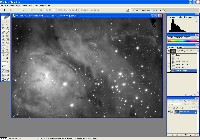
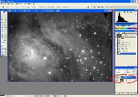
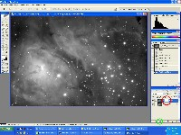
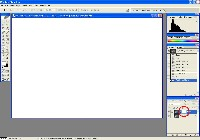
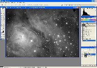

|
Image Processing - Photoshop Positive Layer Mask
|
There are times when we want to perform a process in Photoshop that affects
only the highlights (brighter) portions of an image. One way of doing this
is to prepare an "positive" layer mask from the original image.
At the right is an image before invoking the Positive Layer Mask.
|

|
|
Step A: Copy the image on top of itself (creating a new layer)
|
Click on the image to make it active. Copy its contents:
- Menu selection Select | All or keyboard-shortcut Ctrl-A
- Menu selection Edit | Copy or keyboard-shortcut Ctrl-C
Paste the image onto itself:
- Menu selection Edit | Paste or keyboard-shortcut Ctrl-V
While the image looks the same, note that a new layer has been created (bottom right
on the screen).
|

|
|
Step B: Add a Layer Mask to the new (top) Layer
|
- Menu selection Layer | Add Layer Mask | Reveal All or click on the
small Add Layer Mask icon (circled in Green at the bottom right in the image)
The layer mask is indicated by the white box to the right of the layer image icon
(circled in Red at the bottom right in the image)
|

|
|
Step C: Make the Layer Mask Visible
|
- Alt-Click on the white box icon for the layer mask (circled in Red at the bottom
right in the image)
- Note: "Alt-Click" means hold down the Alt key while moving the mouse-pointer
over the indicated area and clicking the left mouse button.
Note that the visible image is now all white. White in a layer mask allows all of the
associated layer to show through to the combined image.
|

|
|
Step D: Copy the original image (monochrome only) into the Layer Mask
|
Paste the image onto the layer mask:
- Menu selection Edit | Paste or keyboard-shortcut Ctrl-V
Note that the Layer Mask image will be monochrome, regardless of the color or monochrome
state of the original image.
This layer mask can now protect the darker areas of the layer from the effect of
whatever Photoshop routine will be executed on it.
|

|
{kind=link}
{kind=link}
{kind=link}
{kind=link}
{kind=link}